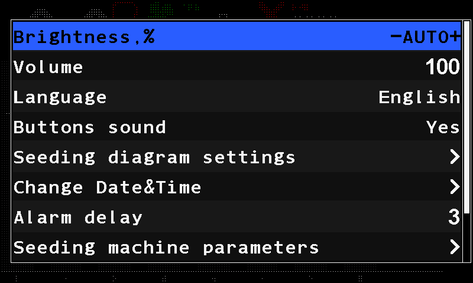
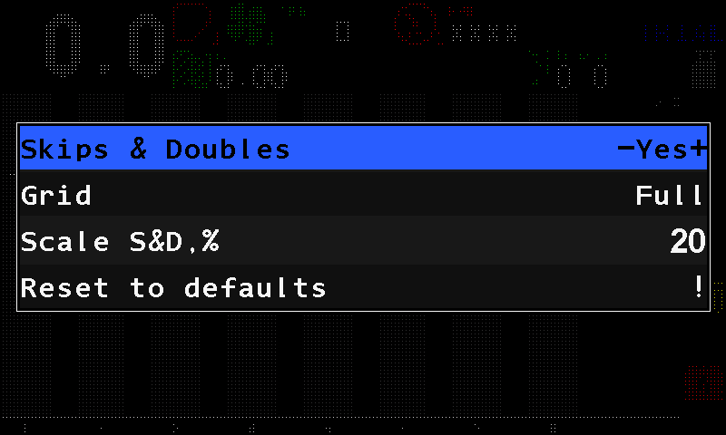

The Settings menu
Every item of the panel's own "Settings" menu — brightness, volume, language, alarm delay, diagram settings, date and time — with its range and access level.
The “Settings” menu holds the settings of the panel itself. Open it from the home screen: “MENU” → “Settings”. The settings of the individual sensors are elsewhere — see Sensor settings.

- “Brightness,%” — the backlight. “AUTO” lets the panel set it from its light sensor.
- “Volume” — the loudness of the panel's sounds.
- “Language” — the language of the screens.
- “Buttons sound” — a sound on every button press.
- “Seeding diagram settings” — how the seed diagram is drawn. Below.
- “Change Date&Time” — the clock. Below.
- “Alarm delay” — how long a fault must last before the alarm window opens.
- “Seeding machine parameters” — width, modes, tramline, calibrations. Seeding machine parameters.
- Scroll bar. More items follow below.
The items
| Item | Range | Level |
|---|---|---|
| “Brightness,%” | 0 … 100, in steps of 10. At 0 the item reads “AUTO” and the panel sets the backlight from its light sensor — brightening quickly, dimming slowly. Any other value fixes the backlight. | Operator |
| “Volume” | 0 … 100, in steps of 10 | Operator |
| “Language” | the installed languages | Operator |
| “Buttons sound” | “No” / “Yes” | Operator |
| “Seeding diagram settings”, “Fertilizer diagram settings”, “Liquid fertilizer diagram settings” | Submenus. Each is shown only when the machine has a speed sensor, its own sensors are in the profile and its diagram is not in the “Flow” mode. | Operator |
| “Change Date&Time” | submenu | Operator |
| “Alarm delay” | 2 … 20 s, default 3 s. See How alarms work. | Operator |
| “Product rate error,%” | 3 … 20 %. Shown only when a product is dosed by weight or a liquid fertilizer pump controller is in the profile. | Agronomist |
| “Seeding machine parameters” | Submenu. Hidden when the machine has neither a speed sensor nor a tramline actuator. | Agronomist |
| “User” | The access level — see Access levels. | Operator |
| “Reset settings” | Returns this menu to the factory values. | Service |
On a machine with two groups of seed sensors, the two diagram items read “Seeding gr.A diagram” and “Seeding gr.B diagram”.
The settings are saved by themselves a few seconds after the last press. Wait a moment before you switch the panel off.
Diagram settings

There are three of these menus — seed, dry fertilizer, liquid fertilizer — with the same items:
| Item | What it does |
|---|---|
| “Skips & Doubles” | Shows the skip and double bars over the last stretch of the path. “Precise” mode only. |
| “Grid” | “No” — only the rate line; “Partial” — only the tolerance limits; “Full” — both. |
| “Scale S&D,%” | The height of the skip and double bars, 5 … 50 % in steps of 5. “Precise” mode only. |
| “Reset to defaults” | Returns this menu to the factory values. Service level only. |
Change Date and Time
Select “Change Date&Time” and press “MENU”. The date and time fields open.

The date and time fields. Select each field with “UP” / “DOWN” and set it with “PLUS” / “MINUS”.
Select “Set” and press “MENU”. The clock takes the new values. “BACK” instead leaves the clock unchanged.
Something your machine does that this page does not answer? Write to support@agriwelt.com — an engineer answers.